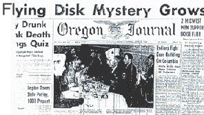

Oregon Journal
26 juin 1947
| Home |
|---|

(AP) ? A Boise le conte de l'aviateur de 9 objets mystérieux hurtling à travers les airs au-dessus de l'ouest de Washington a été discounted par des experts de l'Armée et de l'Air aujourd'hui, mais a reçu une confirmation dans les témoignages de 2 villes du midwest.
Les descriptions des objets brillant, en forme de plat à tarte
, volant apparemment en formation à une vitesse stupéfiante correspondant dans presque tous les détails, et au moins 2 des hommes du midwest ajoutèrent des informations sur un bruit de moteur
et des traînées de vapeur
.
La machine, ou quoi que ce fut, était une couleur argentée brillante ? très grosse ? et se déplaçait à une vitesse stupéfiante.
Le chose surprenante à son sujet est qu'elle ne faisait aucun bruit. Je ne pense pas qu'elle avait un type quelconque de moteur à combustion
interne
.
Faisant référence à une déclaration de Kenneth Arnold, l'homme d'affaire pilote de Boise dans l'Idaho, selon laquelle il avait vu 9 objets brillants dans l'ouest de Washington semblable à celui que Savage avait décrit, l'homme d'Oklahoma City declara : Je sais que cette homme là-haut
(Arnold) les a vraiment vus.
Savage dit avoir parlé à sa femme de l'objet à ce moment mais elle a pensé que je devais avoir vu un éclair
et il l'a aussi dit à des amis pilotes sceptiques.
Je suis resté calmé après ça.
Il a continué jusqu'à ce que je lise l'histoire de cet homme voyant 9 des mêmes choses. Je l'ai vu et j'ai pensé qu'il serait honnête de confirmer ses dires.
Mme Savage a dit aujourd'hui qu'elle était maintenant convaincue que son mari avait vu l'objet he was very much worked up about it when he read about the man in Washington
, a-t-elle déclaré.
Savage dit que l'objet qu'il avait vu était haut dans les airs ? quelque part dans les 10 000 pieds. Je ne pourrais être sûr, à en juger depuis le sol où j'étais.
| Home |
|---|